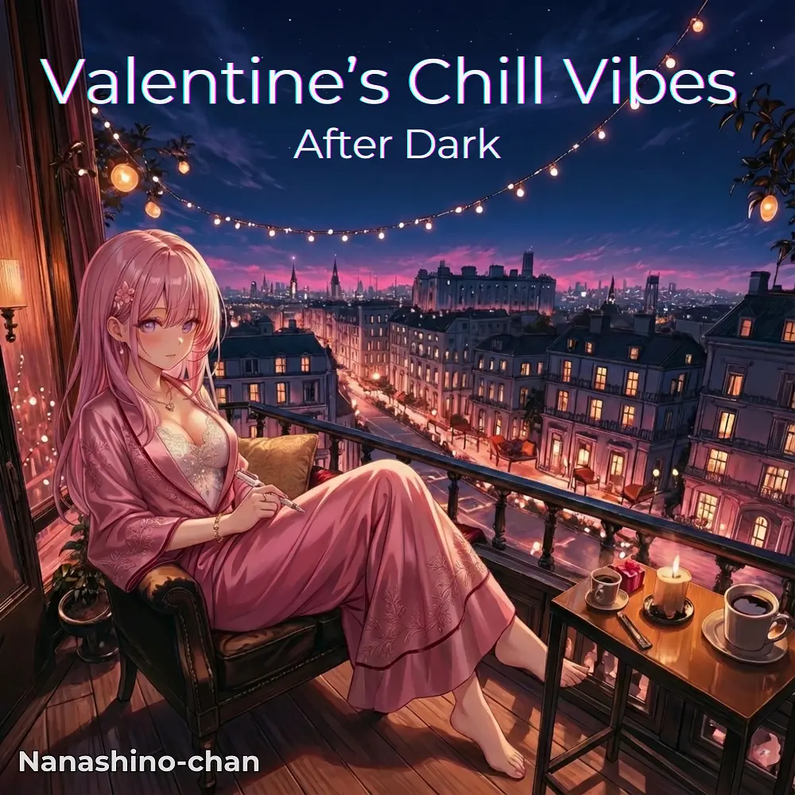

Lo-Fi · Chill
Valentine’s Chill Vibes : After Dark
Nanashino-chan
Explore Valentine’s Chill Vibes : After Dark by Nanashino-chan: 27 instrumental tracks spanning Lo-Fi / Chill. Start with After Dark Confessions / Velvet City Lights, preview the collection and find your favorites on streaming services.
2026-01-13 · Released · 27 tracks · Instrumental
Preview the album
The jacket stays here until you choose a track. Playback uses Apple Music. Select your track inside the player.
APPLE MUSIC PREVIEW
Choose a track to listen
The jacket stays here until you choose a track. Playback uses Apple Music. Select your track inside the player.
If playback is unavailable, open the album or track on the streaming service.
Find this album on streaming services
Links marked “search” open search results. Select the album or track on the service.
Track list 27
- 01After Dark Confessions
- 02Velvet City Lights
- 03Late Night Affection
- 04Shadows of Valentine
- 05Midnight Pulse
- 06Candlelight Silhouettes
- 07Quiet Signals
- 08No Words Needed
- 09Heartbeats at Dusk
- 10Warm Neon Reflections
- 11Secret Hours
- 12Under Soft Streetlights
- 13Hushed Conversations
- 14Night Air Promises
- 15Deep Blue Embrace
- 16Unspoken Feelings
- 17After Midnight Thoughts
- 18Soft Echoes of You
- 19City Glow Reverie
- 20Intimate Distance
- 21Still Awake Together
- 22Low Light Memories
- 23When Time Slows Down
- 24Nightfall Connection
- 25Fading Neon Dreams
- 26Last Train of the Heart
- 27Until the Lights Go Out
Find a sound for your next post
Copy “Nanashino-chan + track title” and paste it into your social app’s music search. Availability depends on your region and account. Copying the name does not grant usage rights.